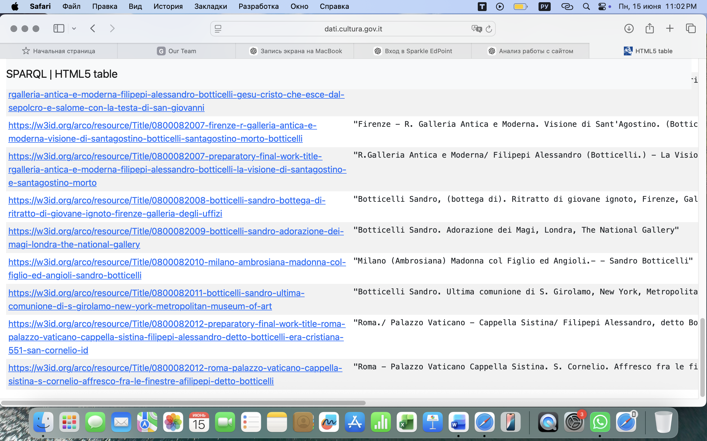

Step 2 – Analysis of Retrieved Cultural Heritage Entities
Research Question
What semantic relationships and cultural heritage information can be identified from the Botticelli-related entities retrieved from the ArCo Knowledge Graph ?
Purpose
The purpose of this step is to analyse the cultural heritage entities retrieved in Step 1 and examine the semantic relationships represented within the ArCo Knowledge Graph .
Prefixes Used
PREFIX rdfs: <http://www.w3.org/2000/01/rdf-schema#> PREFIX rdf: <http://www.w3.org/1999/02/22-rdf-syntax-ns#>
SPARQL Query
PREFIX rdfs: <http://www.w3.org/2000/01/rdf-schema#>
PREFIX rdf: <http://www.w3.org/1999/02/22-rdf-syntax-ns#>
SELECT ?entity ?property ?value
WHERE {
?entity rdfs:label ?label ;
?property ?value .
FILTER(CONTAINS(LCASE(STR(?label)), "botticelli"))
}
LIMIT 100
Explore semantic relationships in ArCo
Query Explanation
This query retrieves RDF properties and semantic relationships associated with Botticelli-related entities. The query first identifies resources whose labels contain the keyword "Botticelli" and then retrieves all available properties and values connected to those resources. This allows a deeper analysis of the semantic structure of the ArCo Knowledge Graph .

Figure 2 Interpretation
Figure 2 illustrates an example of a Botticelli-related cultural heritage entity together with its semantic relationships represented within the ArCo Knowledge Graph . The figure demonstrates how entities are connected through RDF properties and semantic links.

Figure 3 Interpretation
Figure 3 presents a selection of Botticelli-related artworks and museum collections identified through the ArCo Knowledge Graph . The results highlight the diversity of cultural heritage resources linked to Botticelli.
Analysis of Results
The retrieved entities reveal a network of artworks , museums , collections and cultural heritage resources associated with Sandro Botticelli . The semantic structure of ArCo makes it possible to explore relationships between artists, artworks, collections and institutions.
Technical Observations
The analysis demonstrates the importance of semantic relationships for cultural heritage discovery. RDF properties and Linked Data connections enable the retrieval of contextual information that extends beyond simple keyword searches.
Step Conclusion
The analysis confirms that ArCo provides a rich semantic representation of Botticelli-related cultural heritage entities. The identified relationships support further investigation and serve as the basis for identifying missing knowledge in the next step.